WorkBuddy 接入企业微信指南
企微助理集成让您可以通过企业微信远程控制电脑上的 WorkBuddy。在企业微信中向智能机器人发送任务指令，WorkBuddy 在电脑上自动执行，并将结果同步回企业微信聊天窗口。
企微助理能做什么
绑定企微助理后，您可以在企业微信中完成以下操作：
- 在群聊中 @机器人下发团队协作任务，WorkBuddy 自动执行并返回结果
- 跟进任务进度：直接向机器人发送任务指令，随时跟进执行进度
- 创建专属任务群，长期绑定 WorkBuddy 处理团队日常工作
- 发布通知：任务完成后自动通知群聊相关人员
- 任务提醒：将待办、验收、协作事项同步到企微群
- 流程打通：连接 WorkBuddy 任务处理与团队现有工作流
- 确认操作：批准命令执行、文件修改等需要确认的操作
设置前的准备
在开始配置之前，请确认满足以下条件：
| 要求 | 说明 |
|---|---|
| WorkBuddy | 已在电脑上安装 WorkBuddy >= 4.6.4 |
| 企业微信账号 | 拥有一个可创建智能机器人的企业微信账号 |
| 网络连接 | 电脑和手机均能正常访问互联网 |
| WorkBuddy 运行中 | 电脑保持开机并运行 WorkBuddy |
提示
如果您还没有企业微信账号，可以前往 企业微信官网 免费注册一个企业。
连接企微助理
企业微信集成需要先在平台完成机器人创建和配置。请根据您的账号角色选择对应的操作指南。
管理员操作
第一步：进入管理后台创建机器人
打开浏览器，访问 企业微信管理后台，使用管理员账号登录后，依次点击「安全与管理」→「管理工具」→「智能机器人」→「创建机器人」。
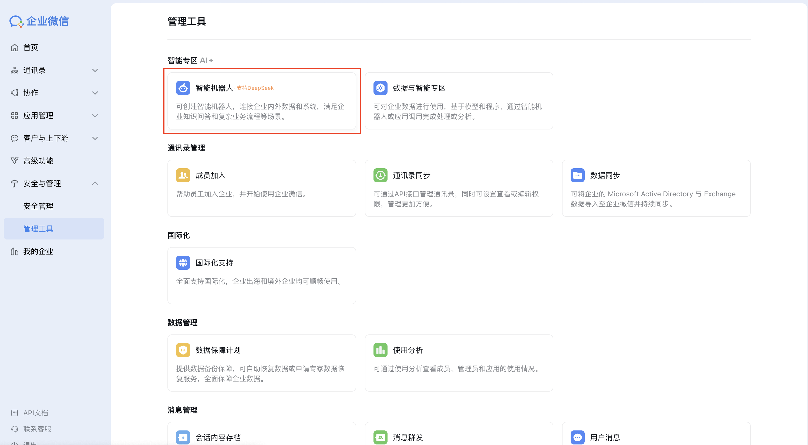
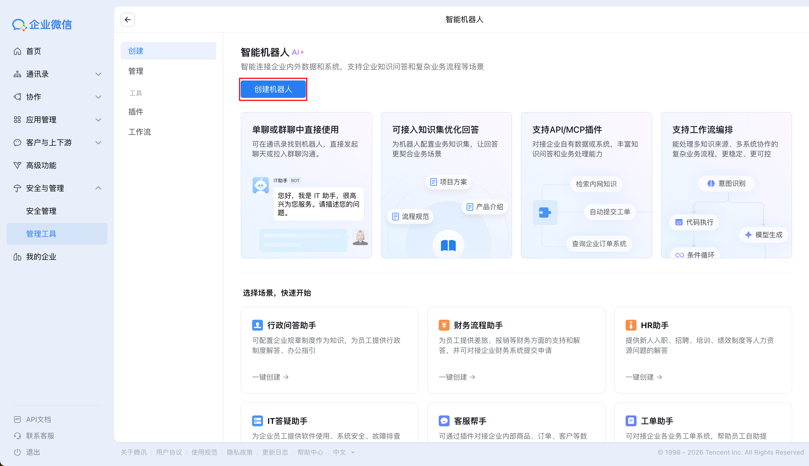
如果先进入 AI 自动生成页面，请点击左下角的「手动创建」：
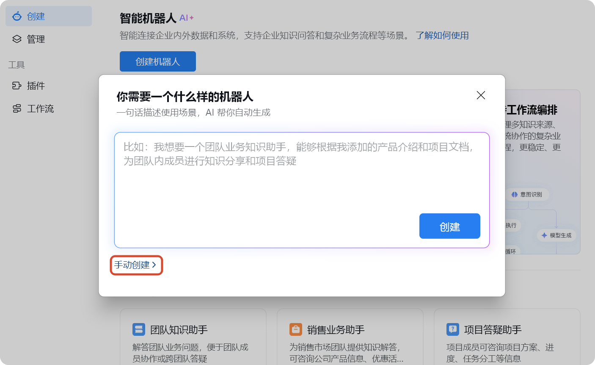
在创建页面直接选择「API 模式创建」：
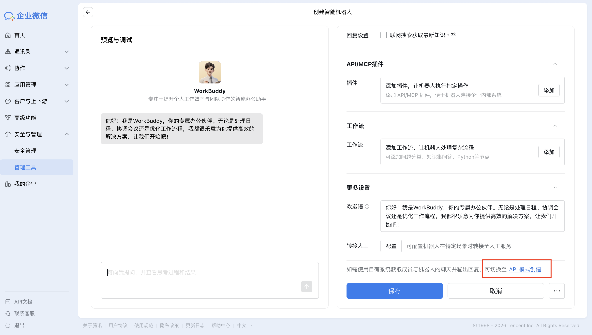
第二步：填写基本信息
进入 API 模式页面后，请先完成以下公共配置：
| 配置项 | 说明 |
|---|---|
| 机器人名称 | 建议填写容易识别的名字，如「WorkBuddy 助手」 |
| 可见范围 | 选择哪些员工、部门或标签可以使用这个机器人 |
点击「可见范围」后的「添加」，选择需要使用机器人的成员、部门或标签。
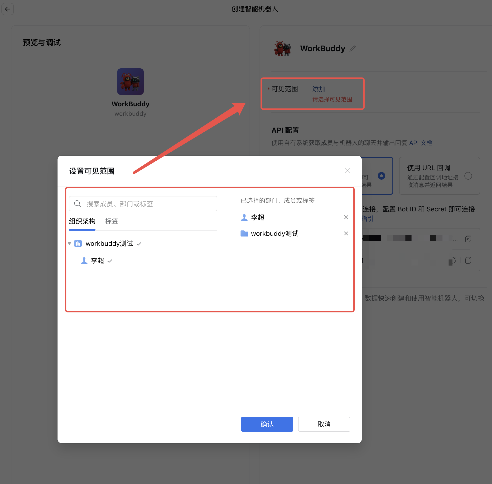
完成以上配置后，请先点击页面底部的「保存」，再在右侧「API 配置」区域选择「使用长连接」。
第三步：获取凭证并完成绑定
进入使用长连接方式接入完成后续步骤。
普通成员操作
第一步：在企业微信客户端创建机器人
打开企业微信客户端，进入「工作台」→「智能机器人应用」→「创建机器人」。
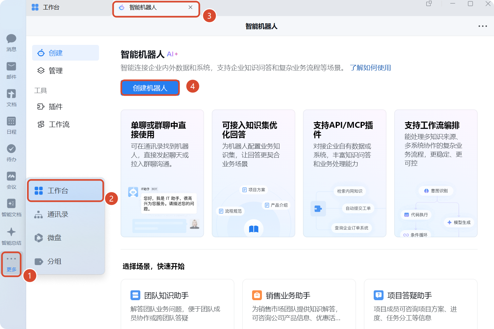
如果先进入 AI 自动生成页面，请点击左下角的「手动创建」，再选择「API 模式创建」：
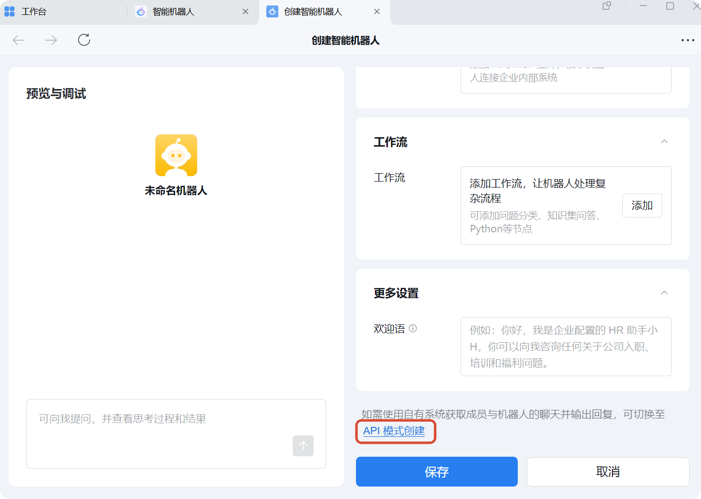
第二步：填写基本信息
进入 API 模式页面后，请先完成以下公共配置：
| 配置项 | 说明 |
|---|---|
| 机器人名称 | 建议填写容易识别的名字，如「WorkBuddy 助手」 |
| 可使用成员围 | 选择哪些员工、部门或标签可以使用这个机器人 |
点击「可使用成员」后的「修改」，选择需要使用机器人的成员、部门或标签。
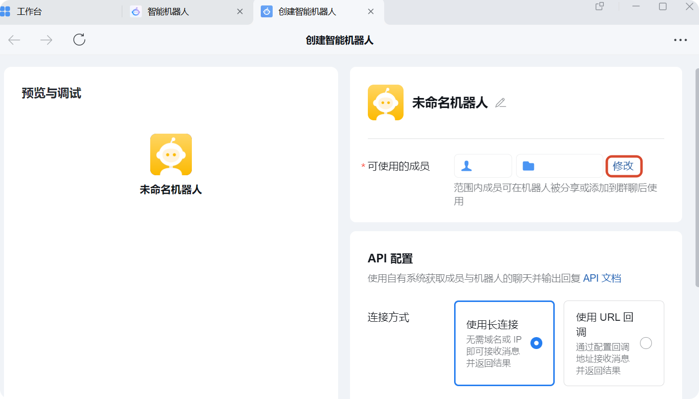
完成以上配置后，再在下方「API 配置」区域选择「使用长连接」。
第三步：获取凭证并完成绑定
进入使用长连接方式接入完成后续步骤。
使用长连接方式接入
两种角色在此步骤的操作一致。推荐优先使用长连接模式，配置步骤更少，也不需要回填 Webhook URL。
在企业微信中获取 Bot ID 和 Secret：
- 在「API 配置」区域选择「使用长连接」
- 复制
Bot ID - 点击
点击获取获取Secret，并妥善保存

提示
长连接模式不需要再填写 URL、Token 或 Encoding-AESKey。
在 WorkBuddy 中完成绑定
- 打开 WorkBuddy，点击左下角头像菜单中的「设置-助理设置」
- 在「集成（BETA）」区域找到「企微助理集成」，点击「配置」
- 在弹窗中选择「WebSocket 长连接」后，有两种绑定方式可选：
- 手动填写
Bot ID和Secret - 点击快捷绑定接入，使用企微扫码完成绑定
- 填入刚才复制的
Bot ID和Secret后点击「注册」完成绑定
- 手动填写
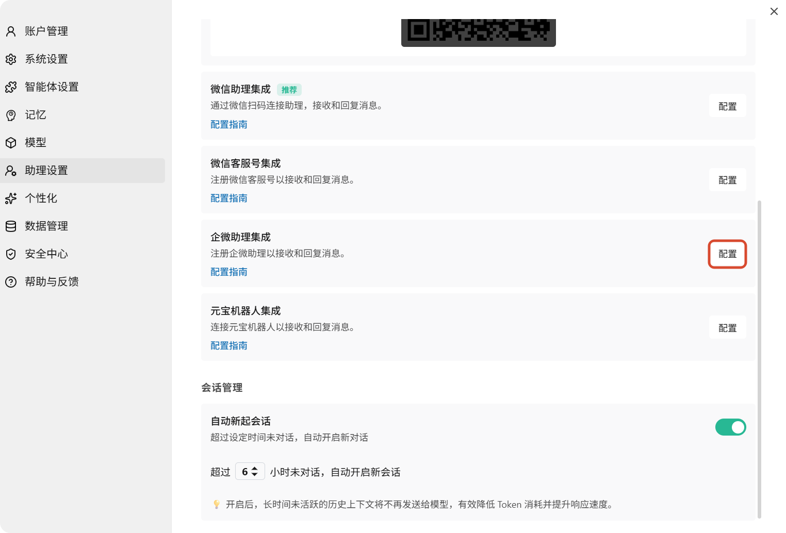
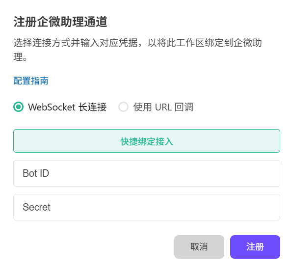
关于 API 模式
企业微信 API 模式支持两种接入方式：
- 长连接模式（推荐）：在 WorkBuddy 中填写
Bot ID和Secret即可完成绑定，配置更简单，无需回填 Webhook URL。 - URL 回调模式：适用于需要 Webhook 回调的场景。需在 WorkBuddy 中填写
Token和Encoding-AESKey，生成 Webhook URL 后再回填到企业微信。
URL 回调模式配置指引见文末「使用 URL 回调接入（备选方案）」。
开始使用
配置完成后，您就可以在企业微信中直接与机器人对话了。
找到机器人
在企业微信通讯录的「企业创建的」分组下找到刚刚创建的机器人，点击「发消息」即可开始下发任务。
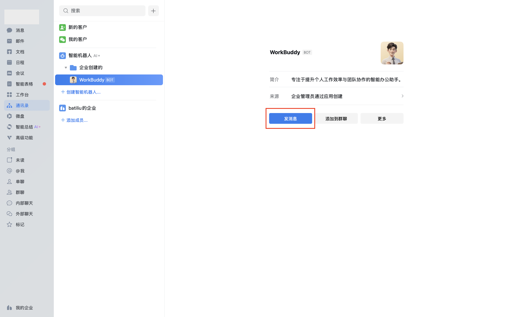
联通后对话效果
发送一条简单消息（例如"你好"）进行联通测试。如果配置正确，WorkBuddy 会接收到消息并在企业微信中返回回复。
恭喜
如果机器人能够正常回复，说明您已成功完成 WorkBuddy 与企业微信的对接！
跨设备接续工作
企微助理支持与 WorkBuddy 桌面端无缝衔接：
- 在企业微信中发起一个任务后，可以回到电脑上的 WorkBuddy 查看完整的执行过程和结果
- 在助理页面可查看远程任务的完整执行记录，包括思考过程、操作步骤、生成文件及最终结果
- 您可以在电脑上继续追问、细化任务，或在企业微信中随时查看进度
什么来自本地电脑
当您通过企业微信向 WorkBuddy 发送任务时，处理过程发生在您的电脑上：
| 来源 | 说明 |
|---|---|
| 企业微信 | 仅发送指令、批准操作和后续消息 |
| 您的电脑 | 提供 WorkBuddy 执行任务所需的全部环境 |
电脑上的 WorkBuddy 使用您本地的项目文件、Shell 环境、凭证权限、插件和工具来执行任务。也就是说，您电脑上能做的事，通过企业微信也能远程完成。
远程任务与普通任务的区别
| 对比项 | 普通任务 | 助理（远程任务） |
|---|---|---|
| 工作目录 | 自由指定 | 固定使用助理专属文件夹 |
| 新建对话 | 支持多个并行任务 | 仅一个会话，所有远程指令集中处理 |
| 上下文管理 | 可清空历史重新开始 | 保留完整对话历史，不可清空 |
建议
本地操作优先使用主界面的普通任务；需要远程触发或统一查看记录时，再使用助理。
使用 URL 回调接入（备选方案）
如果您已经在使用 Webhook 配置，或因网络、部署限制需要通过 URL 回调接入，可按以下步骤操作。
在企业微信中生成回调凭据
- 在「API 配置」区域选择「使用 URL 回调」
- 点击
Token和Encoding-AESKey输入框右侧的「随机获取」 - 保存这两个参数，后续需要在 WorkBuddy 中使用
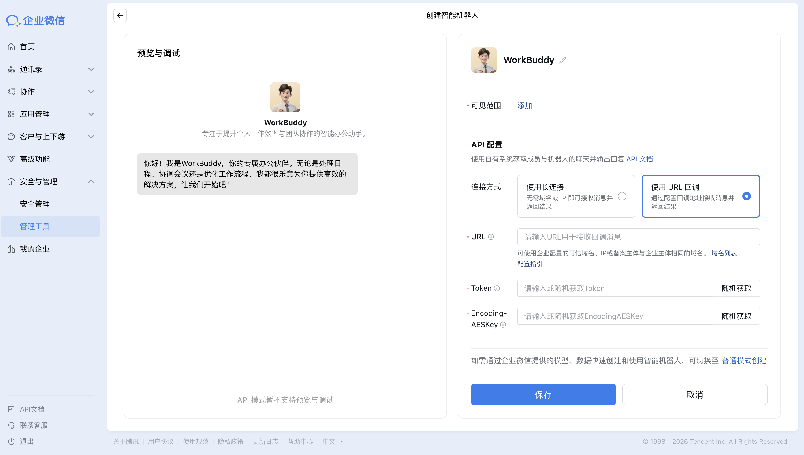
重要
请务必保存好 Token 和 Encoding-AESKey，否则后续无法完成注册。
在 WorkBuddy 中生成 Webhook URL
- 打开 WorkBuddy，进入「助理设置」→「企微 AIBot 集成」→「配置」
- 在注册弹窗中切换到「使用 URL 回调」
- 填入刚才获取的
Token和Encoding-AESKey，点击「注册」 - 注册成功后，复制生成的 Webhook URL
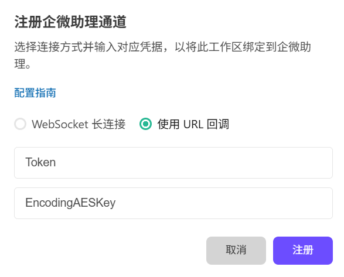
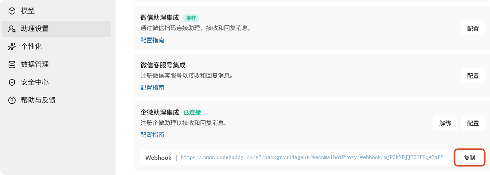
回填 URL 并保存
回到企业微信的机器人创建页面：
- 将刚才复制的 Webhook 地址粘贴到
URL输入框 - 点击「保存」完成配置
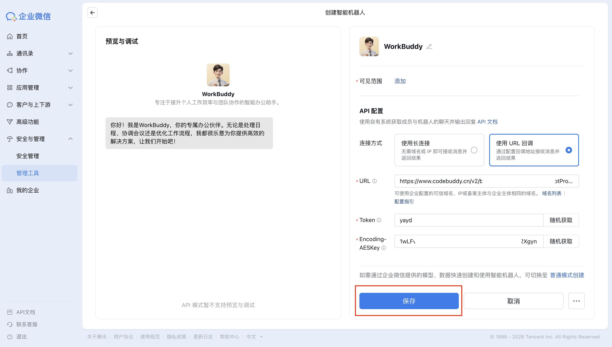
常见问题
机器人没有响应怎么办？
请按以下步骤排查：
- 检查 WorkBuddy 状态：确保电脑上的 WorkBuddy 正在运行，且助理服务已开启
- 核对接入方式：确认企业微信与 WorkBuddy 中选择的是同一种接入方式
- 检查凭据：长连接模式请核对
Bot ID和Secret；URL 回调模式请核对Token和Encoding-AESKey - 检查网络连接：确保电脑能够正常访问网络
URL 验证失败怎么办？
- 确保 WorkBuddy 处于运行状态
- 检查助理服务是否已正常启动
- 重新复制 Webhook URL，确保没有遗漏或多余字符
- 确认
Token和Encoding-AESKey与 WorkBuddy 中配置的完全一致
长连接注册失败怎么办？
- 确认企业微信侧已选择「使用长连接」
- 重新复制
Bot ID和Secret，避免带入多余空格 - 如
Secret已失效，可在企业微信后台重新获取后再次注册